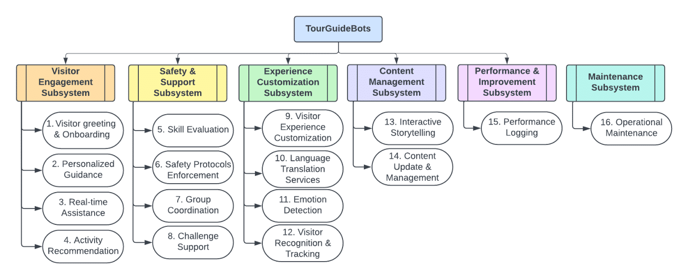
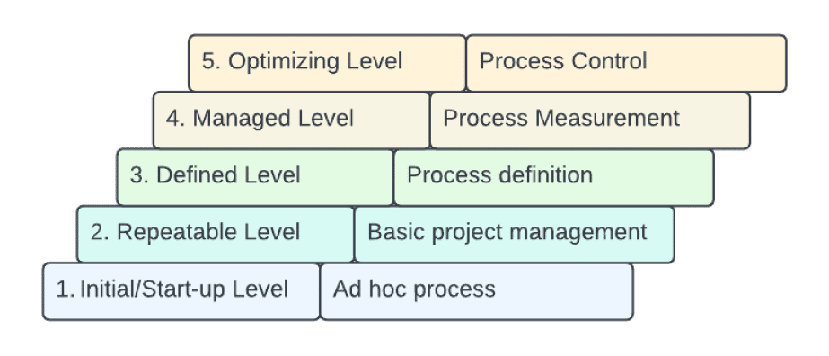

Copyright © 2024 All rights reserved
Company
Contact us
villalvirmata@gmail.com
villalvirmata@gmail.com
Learn More.Block Diagram: System, 6 Subsystems/Classes & functions.
Learn More.My CMM Level for the TourGuideBots ProjectCMM(Capability Maturity Model) Description & CMM level of project start-up.


TourGuideBots
Powered by ChatGPT-4 AI Projectby Denis Villalvir CS351 Software Engineering NJCU
Powered by ChatGPT-4 AI Projectby Denis Villalvir CS351 Software Engineering NJCU
My Tour Guide RobotsInteractive Robotic Guides for Thematic Parks
1.1. Project (Synopsis):
"TourGuideBots," intelligent robotic guides designed for
thematic amusement parks. These autonomous robots will
employ AI, Chat-GPT-4, Machine Learning, and Natural
Language Processing. Stands out for its dynamic
conversational abilities, offering personalized guidance
and narratives.
1.2. Neural Network (Description &
Application):
A neural network is an algorithm designed to recognize
patterns. It interprets sensory data through machine
perception. In TourGuideBots, neural networks process and
analyze data from the environment, aiding in tasks like
navigating spaces, interpreting visitor requests, and
personalizing interactions.
1.3. G.P.T:
GPT stands for "Generative Pre-trained Transformers" the
core of my TourGuideBots' intelligence. With generative
capabilities, they craft responses from scratch, honed
through extensive pre-training to understand the context
and generate relevant content.
1.4. Algorithmic Ensemble: An algorithm is a set of defined, step-by-step procedures
or instructions for completing a task or solving a
problem. The “TourGuideBots” make use of a combination of
10 algorithms, including:
A* for optimized routing through the park.
Bayesian inference for personalized experience tailoring.
Convolutional Neural Networks for visual recognition tasks.
Long Short-Term Memory networks to maintain conversation context.
Support Vector Machines for classification of visitor preferences.
K-means clustering for visitor segmentation.
Decision trees for interactive decision-making prompts.
Reinforcement Learning for adaptive interaction strategies.
Natural Language Processing for sentiment analysis.
10. Collaborative filtering to recommend park attractions.
A* for optimized routing through the park.
Bayesian inference for personalized experience tailoring.
Convolutional Neural Networks for visual recognition tasks.
Long Short-Term Memory networks to maintain conversation context.
Support Vector Machines for classification of visitor preferences.
K-means clustering for visitor segmentation.
Decision trees for interactive decision-making prompts.
Reinforcement Learning for adaptive interaction strategies.
Natural Language Processing for sentiment analysis.
10. Collaborative filtering to recommend park attractions.
1.5. CASE Tools: A use case is a description of a system’s behavior in
response to external stimuli, focusing on the interaction
between users and the system. It helps define the
requirements of a system and the context within which it
operates.
1. Visual Studio Code.
2. Azure Machine Learning.
3. GitHub.
4. Jenkins.
5. ROS (Robot Operating System).
6. TensorFlow.
-Code Generation Specific Tools:
7. Rational Rhapsody: A visual development environment that utilizes UML for code generation, particularly effective during rapid prototyping for the TourGuideBots project to ensure design and code alignment.
8. Enterprise Architect: An extensive UML analysis tool with code generation capabilities, supporting languages like C++, Java, and Python.1.6. UML: Using Code generation tools like Rational Rhapsody and Enterprise Architect, we can simulate code generation for the TourGuideBots project. From the UML diagrams in step-8, which define classes and attributes for subsystem functionality, these tools can auto-generate foundational Python code, establishing backend logic for real-time visitor interaction.
1.7. Purchase/Lease: Simulating the acquisition of code through existing
software products. For example, using a COTS product like
IBM Watson could provide AI capabilities for visitor
experience customization through machine learning. An MCOTS
version of an open-source Robot Operating System (ROS) might
include proprietary plugins for enhanced robot
functionality. This approach streamlines the development
process by integrating mature, tested solutions, thus
reducing project lead times and potentially lowering
costs.1. Visual Studio Code.
2. Azure Machine Learning.
3. GitHub.
4. Jenkins.
5. ROS (Robot Operating System).
6. TensorFlow.
-Code Generation Specific Tools:
7. Rational Rhapsody: A visual development environment that utilizes UML for code generation, particularly effective during rapid prototyping for the TourGuideBots project to ensure design and code alignment.
8. Enterprise Architect: An extensive UML analysis tool with code generation capabilities, supporting languages like C++, Java, and Python.1.6. UML: Using Code generation tools like Rational Rhapsody and Enterprise Architect, we can simulate code generation for the TourGuideBots project. From the UML diagrams in step-8, which define classes and attributes for subsystem functionality, these tools can auto-generate foundational Python code, establishing backend logic for real-time visitor interaction.